以下是可以在122.0.65.73 23333端口使用的先行卡的列表。下载补丁后即可使用。
使用方法：原版游戏下载补丁后解压至游戏文件夹，手机党请自定义数据库（方法请查看压缩包内使用说明），暂不支持游侠版游戏，静水版游戏无需使用。
资料来源：任天堂世界论坛，@Solari_28。
脚本作者：YGOPRO，ygohack137，SalvationDevelopment，Ygopro.co，Eerie Code，以及其他公开发布的先行卡脚本的作者。
星星图标是Yusuke Kamiyamane的作品。
数据整理：Loki。
提示：电脑上安装本次补丁前，请先删除expansions文件夹，否则会出现卡片重复的现象。
卡片列表
| 卡图 | 卡名 | 效果 |
|---|---|---|
| 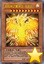 | 太阳神之翼神龙-不死鸟 | [怪兽|效果] 幻神兽/神 [★10] 4000/4000 这张卡不能通常召唤，用这张卡的效果才能特殊召唤。 ①：这张卡在墓地存在，「太阳神之翼神龙」从场上送去自己墓地的场合发动。这张卡特殊召唤。不能对应这个效果的发动让效果发动。 ②：这张卡不受其他卡的效果影响。 ③：支付1000基本分才能发动。选场上1只怪兽送去墓地。 ④：结束阶段发动。这张卡送去墓地，从自己的手卡·卡组·墓地把1只「太阳神之翼神龙-球体形」无视召唤条件特殊召唤。 |
| 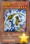 | 拘束臂 | [怪兽|效果] 恶魔/暗 [★4] 500/1200 ①：这张卡召唤·特殊召唤成功的场合，以对方场上1只表侧表示怪兽为对象发动。这只怪兽表侧表示存在期间，作为对象的表侧表示怪兽不能攻击，效果无效化。 ②：只要这张卡的①的效果作为对象的怪兽在场上存在，这张卡不会被战斗·效果破坏。 |
| 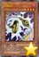 | 拘束足 | [怪兽|效果] 恶魔/暗 [★4] 800/600 ①：这张卡召唤·反转召唤·特殊召唤成功的场合发动。场上盖放的魔法·陷阱卡全部回到持有者手卡。 ②：把墓地的这张卡除外，以对方场上盖放的1张魔法·陷阱卡为对象才能发动。直到下次的对方回合结束时那张卡不能发动。 |
| 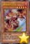 | 狱炎诅咒之龙 | [怪兽|效果] 龙/暗 [★5] 2000/1500 ①：这张卡召唤·特殊召唤成功的场合，以场上1张场地魔法卡为对象才能发动。那张卡破坏。 ②：1回合1次，自己主要阶段才能发动。融合怪兽卡决定的包含这张卡的融合素材怪兽从自己场上送去墓地，把那1只融合怪兽从额外卡组融合召唤。 |
| 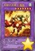 | 天翔之龙骑士 盖亚 | [怪兽|效果|融合] 龙/风 [★7] 2600/2100 「暗黑骑士 盖亚」怪兽＋龙族怪兽 ①：这张卡只要在怪兽区域存在，卡名当作「龙骑士 盖亚」使用。 ②：这张卡特殊召唤成功的场合才能发动。从自己的卡组·墓地选1张「螺旋枪杀」加入手卡。 ③：这张卡向对方怪兽攻击宣言时才能发动。那只对方怪兽的表示形式变更。 |
| 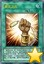 | 真实之名 | [魔法] 「真实之名」在1回合只能发动1张。 ①：宣言1个卡名才能发动。自己卡组最上面的卡翻开，宣言的卡的场合，那张卡加入手卡。并且，可以再从卡组把1只神属性怪兽加入手卡或特殊召唤。不是的场合，翻开的卡送去墓地。 |
| 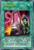 | 削命的宝札 | [魔法] 「削命的宝札」在1回合只能发动1张，这张卡发动的回合，自己不能把怪兽特殊召唤。 ①：自己直到手卡变成3张为止从卡组抽卡。这张卡的发动后，直到回合结束时对方受到的全部伤害变成0。这个回合的结束阶段，自己手卡全部送去墓地。 |
| 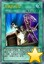 | 左腕的代偿 | [魔法] 这张卡发动的回合，自己不能把魔法·陷阱卡盖放。 ①：这张卡以外的自己手卡是2张以上的场合，把那些手卡全部除外才能发动。从卡组把1张魔法卡加入手卡。 |
 | 邪神官 契伦·沙巴 | [怪兽|效果] 爬虫类/暗 [★8] 2500/0 「邪神官 契伦·沙巴」的②的效果1回合只能使用1次。 ①：自己手卡是5张以上的场合，这张卡可以不用解放作召唤。 ②：这张卡被战斗破坏送去墓地时才能发动。这张卡从墓地守备表示特殊召唤。这个效果特殊召唤的这张卡当作调整使用。 |
 | 银河蠕虫 | [怪兽|效果] 昆虫/光 [★3] 1200/1000 ①：这张卡召唤成功时，自己场上没有这张卡以外的怪兽存在的场合才能发动。从卡组把1只3星以下的「银河」效果怪兽特殊召唤。这个效果特殊召唤的怪兽的效果无效化。 |
 | 青眼双爆裂龙 | [怪兽|效果|融合] 龙/光 [★10] 3000/2500 「青眼白龙」＋「青眼白龙」 这张卡用融合召唤以及以下方法才能特殊召唤。 ●把自己的怪兽区域的上记卡送去墓地的场合可以从额外卡组特殊召唤（不需要「融合」）。 ①：这张卡不会被战斗破坏。 ②：这张卡在同1次的战斗阶段中最多2次可以向怪兽攻击。 ③：没被这张卡的攻击破坏对方怪兽的伤害步骤结束时才能发动。那只对方怪兽除外。 |
 | 青眼亚白龙 | [怪兽|效果] 龙/光 [★8] 3000/2500 这张卡不能通常召唤。把手卡1只「青眼白龙」给对方观看的场合可以特殊召唤。这个方法的「青眼亚白龙」的特殊召唤1回合只能有1次。 ①：这张卡的卡名只要在场上·墓地存在当作「青眼白龙」使用。 ②：1回合1次，以对方场上1只怪兽为对象才能发动。那只怪兽破坏。这个效果发动的回合，这张卡不能攻击。 |
| 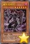 | 魔帝 安格玛 | [怪兽|效果] 恶魔/暗 [★6] 2400/1000 ①：这张卡上级召唤成功时，把自己墓地1张魔法卡除外才能发动。把1张除外的那张魔法卡的同名卡从卡组加入手卡。 |
| 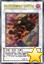 | 星尘充能战士 | [怪兽|效果|同调] 战士/风 [★6] 2000/1300 调整＋调整以外的怪兽1只以上 「星尘充能战士」的①的效果1回合只能使用1次。 ①：这张卡同调召唤成功时才能发动。自己从卡组抽1张。 ②：这张卡可以向特殊召唤的对方怪兽全部各作1次攻击。 |
| 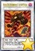 | 究极幻神 奥特美特尔·比希巴尔金 | [怪兽|效果|同调] 龙/暗 [★12] 0/0 规则上，这张卡的等级当作12星使用。这张卡不能同调召唤，把自己场上的5星以上而相同等级的调整和调整以外的怪兽各1只送去墓地的场合才能特殊召唤。 ①：这张卡不会被效果破坏，攻击力上升场上的怪兽数量×1000。 ②：1回合1次，自己·对方的主要阶段才能发动。在双方场上把相同数量的「邪眼神衍生物」（恶魔族·暗·1星·攻/守0）尽可能守备表示特殊召唤。这个回合这张卡不能攻击。 |
| 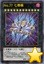 | No.77 七罪蛛 | [怪兽|效果|超量] 恶魔/暗 [☆12] 4000/3000 12星怪兽×2 这张卡也能在自己场上的10·11阶的暗属性超量怪兽上面重叠来超量召唤。这个方法特殊召唤的回合，这张卡的①的效果不能发动。 ①：1回合1次，把这张卡2个超量素材取除才能发动。对方场上的特殊召唤的怪兽全部除外，从除外的怪兽之中选1只在这张卡下面重叠作为超量素材。 ②：场上的这张卡被战斗·效果破坏的场合，可以作为代替把这张卡1个超量素材取除。 |
| 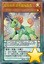 | 娱乐伙伴 异色眼独角兽 | [怪兽|效果|灵摆] 兽/光 [★1] 100/600 8/8 ←8 【灵摆】 8→ ①：只在这张卡在灵摆区域存在才有1次，自己的「异色眼」怪兽的攻击宣言时，以那只怪兽以外的自己场上1只「娱乐伙伴」怪兽为对象才能发动。那只攻击怪兽的攻击力直到战斗阶段结束时上升作为对象的怪兽的原本攻击力数值。 【怪兽效果】 ①：这张卡召唤·特殊召唤成功时，以自己墓地1只「娱乐伙伴」怪兽为对象才能发动。自己回复那只怪兽的攻击力数值的基本分。 |
| 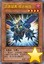 | 急袭猛禽-推进林鸮 | [怪兽|效果] 鸟兽/暗 [★4] 100/1700 ①：自己的「急袭猛禽」怪兽被选择作为对方怪兽的攻击对象时，把这张卡从手卡除外才能发动。那只攻击怪兽破坏。 |
| 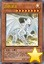 | 白色灵龙 | [怪兽|效果] 龙/光 [★8] 2500/2000 这张卡在规则上也当作「青眼」卡使用。 ①：这张卡只要在手卡·墓地存在，当作通常怪兽使用。 ②：这张卡召唤·特殊召唤成功时，以对方场上1张魔法·陷阱卡为对象才能发动。那张卡除外。 ③：对方场上有怪兽存在的场合，把这张卡解放才能发动。从手卡把1只「青眼白龙」特殊召唤。这个效果在对方回合也能发动。 |
| 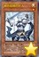 | 青色眼睛的护人 | [怪兽|效果|调整] 魔法师/光 [★1] 800/1300 「青色眼睛的护人」的②的效果1回合只能使用1次。 ①：这张卡召唤成功时才能发动。从手卡把1只光属性·1星调整特殊召唤。 ②：以自己场上1只效果怪兽为对象才能发动。那只怪兽送去墓地，从手卡把1只「青眼」怪兽特殊召唤。 |
| 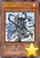 | 青色眼睛的贤士 | [怪兽|效果|调整] 魔法师/光 [★1] 0/1500 「青色眼睛的贤士」的②的效果1回合只能使用1次。 ①：这张卡召唤成功时才能发动。从卡组把「青色眼睛的贤士」以外的1只光属性·1星调整加入手卡。 ②：把这张卡从手卡丢弃，以自己场上1只效果怪兽为对象才能发动。那只怪兽送去墓地，从卡组把1只「青眼」怪兽特殊召唤。 |
| 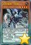 | 无形噬体·忧郁 | [怪兽|效果|灵摆] 龙/地 [★4] 0/2050 5/5 ←5 【灵摆】 5→ 这张卡的控制者在每次自己准备阶段把自己场上1只怪兽解放。或者不解放让这张卡破坏。 ①：只要自己场上有「无形噬体」怪兽存在，双方不能把魔法·陷阱·怪兽的效果连锁发动。 【怪兽效果】 ①：只要灵摆召唤·反转过的这张卡在怪兽区域存在，双方不是「无形噬体」怪兽不能从额外卡组特殊召唤。 |
 | 无形噬体·愤怒 | [怪兽|效果|灵摆] 龙/地 [★4] 1650/0 3/3 ←3 【灵摆】 3→ 这张卡的控制者在每次自己准备阶段把自己场上1只怪兽解放。或者不解放让这张卡破坏。 ①：只要自己场上有「无形噬体」怪兽存在，双方不能把「无形噬体」怪兽以外的怪兽解放。 【怪兽效果】 ①：只要灵摆召唤·反转过的这张卡在怪兽区域存在，双方不是「无形噬体」怪兽不能从额外卡组特殊召唤。 |
| 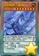 | 无形噬体·虚饰 | [怪兽|效果|灵摆] 龙/地 [★8] 2750/0 5/5 ←5 【灵摆】 5→ 这张卡的控制者在每次自己准备阶段把自己场上1只怪兽解放。或者不解放让这张卡破坏。 ①：只要自己场上有「无形噬体」怪兽存在，「无形噬体」卡以外的被送去双方墓地的卡不去墓地而除外。 【怪兽效果】 ①：只要这张卡在怪兽区域存在，双方不是「无形噬体」怪兽不能从额外卡组特殊召唤。 |
| 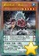 | 雾动机龙·棘龙 | [怪兽|效果|灵摆] 机械/水 [★5] 2500/1800 3/3 ←3 【灵摆】 3→ ①：这张卡以外的自己场上的「雾动机龙」卡被战斗或者对方的效果破坏的场合，可以作为代替把这张卡破坏。 【怪兽效果】 ①：可以把这张卡以外的自己场上1只「雾动机龙」怪兽解放，从以下效果选择1个发动。 ●这个回合，这张卡可以直接攻击。 ●这个回合，这张卡在同1次的战斗阶段中可以作2次攻击。 |
| 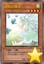 | 里风之精灵 | [怪兽|效果] 天使/风 [★4] 1800/900 ①：这张卡召唤成功的场合才能发动。从卡组把1只反转怪兽加入手卡。 |
| 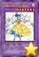 | 幻奏的华歌圣 花之普莉玛 | [怪兽|效果|融合] 天使/光 [★7] 1900/2000 「幻奏的音姬」怪兽＋「幻奏」怪兽1只以上 ①：这张卡的攻击力上升作为这张卡的融合素材的怪兽数量×300。 ②：这张卡在同1次的战斗阶段中可以作2次攻击。 ③：融合召唤的这张卡被送去墓地的场合，以自己墓地1只「幻奏」怪兽为对象才能发动。那只怪兽加入手卡。 |
| 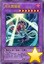 | 月光舞猫姬 | [怪兽|效果|融合] 兽战士/暗 [★7] 2400/2000 「月光」怪兽×2 ①：这张卡不会被战斗破坏。 ②：1回合1次，自己主要阶段1把这张卡以外的自己场上1只「月光」怪兽解放才能发动。这个回合，对方怪兽各有1次不会被战斗破坏，这张卡可以向全部对方怪兽各作2次攻击。 ③：这张卡的攻击宣言时发动。给与对方100伤害。 |
| 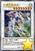 | 水晶翼同调龙 | [怪兽|效果|同调] 龙/风 [★8] 3000/2500 调整＋调整以外的同调怪兽1只以上 ①：1回合1次，这张卡以外的怪兽的效果发动时才能发动。那个发动无效并破坏。这个效果破坏怪兽的场合，这张卡的攻击力直到回合结束时上升这个效果破坏的怪兽的原本攻击力数值。 ②：这张卡和5星以上的对方怪兽进行战斗的伤害计算时发动。这张卡的攻击力只在那次伤害计算时上升进行战斗的对方怪兽的攻击力数值。 |
| 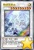 | 青眼精灵龙 | [怪兽|效果|同调] 龙/光 [★9] 2500/3000 调整＋调整以外的「青眼」怪兽1只以上 ①：只要这张卡在怪兽区域存在，双方不能把2只以上的怪兽同时特殊召唤。 ②：1回合1次，墓地的卡的效果发动时才能发动。那个发动无效。 ③：把同调召唤的这张卡解放才能发动。从额外卡组把「青眼精灵龙」以外的1只龙族·光属性的同调怪兽守备表示特殊召唤。那只怪兽在这个回合的结束阶段破坏。这个效果在对方回合也能发动。 |
| 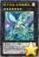 | 电子光虫-总线独角仙 | [怪兽|效果|超量] 昆虫/光 [☆7] 2600/2200 昆虫族·光属性7星怪兽×2只以上 这张卡也能从自己场上的5·6阶的昆虫族超量怪兽把2个超量素材取除，在那只超量怪兽上面重叠来超量召唤。 ①：这张卡向守备表示怪兽攻击的场合，给与攻击力超过那个守备力的数值的战斗伤害。 ②：1回合1次，把这张卡1个超量素材取除才能发动。对方场上的守备力最高的怪兽破坏。这个效果在对方回合也能发动。 |
| 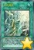 | 光之灵堂 | [魔法|场地] ①：只要这张卡在场地区域存在，自己在通常召唤外加上只有1次，自己主要阶段可以把1只光属性·1星调整召唤。 ②：1回合1次，以自己场上1只表侧表示怪兽为对象才能发动。从手卡·卡组把1只通常怪兽送去墓地。作为对象的怪兽的攻击力·守备力直到回合结束时上升送去墓地的怪兽的等级×100。 ③：把墓地的这张卡除外才能发动。从卡组把1张「毁灭之爆裂疾风弹」加入手卡。 |
| 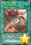 | 无形噬体感染 | [魔法|永续] 「无形噬体感染」的②的效果1回合只能使用1次。 ①：场上的「无形噬体」怪兽的攻击力·守备力上升场上的「无形噬体」卡数量×100。 ②：自己的手卡·场上的怪兽被解放的场合或者被战斗·效果破坏的场合才能发动。从卡组把1张「无形噬体」卡加入手卡。 |
 | 雾动机龙爆发 | [陷阱] ①：自己场上的「雾动机龙」怪兽被战斗·效果破坏的场合，以对方场上1张卡为对象才能发动。那张卡破坏。 |
| 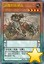 | 迪隆的铁骑兵 | [怪兽|效果|灵摆] 恐龙/地 [★4] 1600/2600 5/5 ←5 【灵摆】 5→ 【怪兽效果】 这张卡和灵摆怪兽进行战斗的伤害步骤开始时：这张卡的攻击力·守备力直到伤害步骤结束时变成一半。 |
| 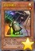 | 星兹铁罐人 | [怪兽|效果] 念动力/光 [★1] 0/0 在自己或者对方回合：可以把这张卡除外；从手卡把1只2星以上的「星兹」怪兽特殊召唤。「星兹铁罐人」的这个效果1回合只能使用1次。1回合1次，在结束阶段时：可以支付500基本分，从卡组把3张卡名不同的「星兹」卡给对方观看，对方从那之中随机选1张加入自己手卡，把剩余送去墓地。 |
| 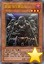 | 星兹飞行突击队 | [怪兽|效果] 念动力/暗 [★3] 1000/1000 在自己或者对方回合：可以把这张卡除外；从手卡把1只4星以上的「星兹」怪兽特殊召唤。「星兹飞行突击队」的这个效果1回合只能使用1次。1回合1次：可以支付1000基本分，之后选择自己墓地1只念动力族「星兹」怪兽；那只怪兽特殊召唤。 |
| 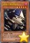 | 星兹三角穿梭机 | [怪兽|效果] 机械/暗 [★5] 2000/2000 1回合1次：可以从卡组把1只「星兹」怪兽送去墓地，之后选择场上1只表侧表示怪兽；那只怪兽的攻击力·守备力下降送去墓地的那只怪兽的等级×100。这张卡被战斗或者卡的效果破坏送去墓地的场合：可以把墓地的这张卡除外；从卡组把1只4星以下的「星兹」怪兽特殊召唤。 |
| 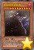 | 星兹暗黑星食者 | [怪兽|效果] 机械/暗 [★9] 3000/2600 不能成为对方的卡的效果的对象。在自己或者对方回合，陷阱卡发动时：可以把墓地的1只「星兹」怪兽除外；那个发动无效并破坏。这张卡被战斗或者卡的效果破坏送去墓地的场合：可以把墓地的这张卡除外；从卡组把1只8星以下的「星兹」怪兽加入手卡。 |
| 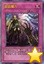 | 星兹魔力 | [陷阱] 选择自己场上1只「星兹」怪兽；破坏那只怪兽，把对方的场上或者墓地的1张卡除外。「星兹魔力」在1回合只能发动1张。 |
 | 古生物 林乔利虫 | [陷阱] ①：以除外的1张自己或者对方的卡为对象才能发动。那张卡回到墓地。 ②：场上的陷阱卡发动时，连锁那个发动这个效果才能从墓地发动。这张卡变成通常怪兽（水族·水·2星·攻1200/守0）在怪兽区域特殊召唤（不当作陷阱卡使用）。这个效果特殊召唤的这张卡不受怪兽的效果影响，从场上离开的场合除外。 |
 | 古生物 伊尔东钵 | [陷阱] ①：以场上1只表侧表示怪兽为对象才能发动。那只怪兽的攻击力·守备力直到回合结束时上升500。 ②：场上的陷阱卡发动时，连锁那个发动这个效果才能从墓地发动。这张卡变成通常怪兽（水族·水·2星·攻1200/守0）在怪兽区域特殊召唤（不当作陷阱卡使用）。这个效果特殊召唤的这张卡不受怪兽的效果影响，从场上离开的场合除外。 |
| 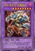 | DDD 克龙王 贝奥武夫 | [怪兽|效果|融合] 恶魔/暗 [★8] 3000/2500 「DDD」怪兽＋「DD」怪兽 ①：只要这张卡在怪兽区域存在，自己的「DD」怪兽向守备表示怪兽攻击的场合，给与对方为攻击力超过那个守备力的数值的战斗伤害。 ②：自己准备阶段才能发动。双方的魔法与陷阱区域的卡全部破坏。 |
| 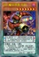 | DD 魔导贤者 牛顿 | [怪兽|效果|灵摆] 恶魔/暗 [★7] 0/0 10/10 ←10 【灵摆】 10→ ①：自己不是「DD」怪兽不能灵摆召唤。这个效果不会被无效化。 ②：只在这张卡在灵摆区域存在才有1次，给与自己伤害的陷阱卡的效果发动的场合，可以把那个效果无效。那之后，这张卡破坏。 【怪兽效果】 「DD 魔导贤者 牛顿」的怪兽效果1回合只能使用1次。 ①：把这张卡从手卡丢弃，以「DD 魔导贤者 牛顿」以外的自己墓地1张「DD」卡或者「契约书」卡为对象才能发动。那张卡加入手卡。 |
| 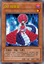 | DD 拉弥亚 | [怪兽|效果|调整] 恶魔/暗 [★1] 100/1900 「DD 拉弥亚」的效果1回合只能使用1次。 ①：这张卡在手卡·墓地存在的场合，从手卡以及自己场上的表侧表示的卡之中把「DD 拉弥亚」以外的1张「DD」卡或者「契约书」卡送去墓地才能发动。这张卡特殊召唤。这个效果特殊召唤的这张卡从场上离开的场合除外。 |
 | 古生物 皮卡虫 | [陷阱] ①：从手卡丢弃1张「古生物」卡。那之后，自己从卡组抽2张。 ②：场上的陷阱卡发动时，连锁那个发动这个效果才能从墓地发动。这张卡变成通常怪兽（水族·水·2星·攻1200/守0）在怪兽区域特殊召唤（不当作陷阱卡使用）。这个效果特殊召唤的这张卡不受怪兽的效果影响，从场上离开的场合除外。 |
 | 古生物 拟油栉虫 | [陷阱] ①：以场上1张魔法·陷阱卡为对象才能发动。那张卡破坏。 ②：场上的陷阱卡发动时，连锁那个发动这个效果才能从墓地发动。这张卡变成通常怪兽（水族·水·2星·攻1200/守0）在怪兽区域特殊召唤（不当作陷阱卡使用）。这个效果特殊召唤的这张卡不受怪兽的效果影响，从场上离开的场合除外。 |
 | 古生物 欧巴宾海蝎 | [怪兽|效果|超量] 水/水 [☆2] 0/2400 2星怪兽×2 「古生物 欧巴宾海蝎」的③的效果1回合只能使用1次。 ①：这张卡不受其他怪兽的效果影响。 ②：只要这张卡在怪兽区域存在，自己的「古生物」陷阱卡的发动从手卡也能用。 ③：这张卡有陷阱卡在作为超量素材的场合，把这张卡1个超量素材取除才能发动。从卡组把1张「古生物」陷阱卡加入手卡。 |
 | 古生物 足杯虫 | [陷阱] ①：以场上1张表侧表示的卡为对象才能发动。丢弃1张手卡，作为对象的卡除外。 ②：场上的陷阱卡发动时，连锁那个发动这个效果才能从墓地发动。这张卡变成通常怪兽（水族·水·2星·攻1200/守0）在怪兽区域特殊召唤（不当作陷阱卡使用）。这个效果特殊召唤的这张卡不受怪兽的效果影响，从场上离开的场合除外。 |
| 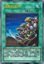 | 同胞的牵绊 | [魔法] 这张卡发动的回合，自己不能进行战斗阶段。 ①：支付2000基本分，以自己场上1只4星以下的怪兽为对象才能发动。和那只怪兽相同种族·属性·等级而卡名不同的2只怪兽从卡组特殊召唤（同名卡最多1张）。这张卡的发动后，直到回合结束时自己不能把怪兽特殊召唤。 |
| 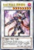 | DDD 咒血王 赛弗里德 | [怪兽|效果|同调] 恶魔/暗 [★8] 2800/2200 调整＋调整以外的「DD」怪兽1只以上 「DDD 咒血王 赛弗里德」的①的效果1回合只能使用1次。 ①：以场上1张表侧表示的魔法·陷阱卡为对象才能发动。那张卡的效果直到下个准备阶段无效化。这个效果在对方回合也能发动。 ②：这张卡被战斗·效果破坏送去墓地的场合发动。自己回复自己场上的「契约书」卡数量×1000基本分。 |
| 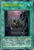 | 暗魔界的契约书 | [魔法|永续] 「暗魔界的契约书」的①的效果1回合只能使用1次。 ①：从以下效果选择1个才能把这个效果发动。 ●以自己墓地1只「DD」灵摆怪兽为对象才能发动。那只怪兽在自己的灵摆区域放置。 ●从自己的额外卡组把1只表侧表示的「DD」灵摆怪兽在自己的灵摆区域放置。 ②：自己准备阶段发动。自己受到1000伤害。 |
 | DD 魔导贤者 哥白尼 | [怪兽|效果|灵摆] 恶魔/暗 [★4] 0/0 1/1 ←1 【灵摆】 1→ ①：自己不是「DD」怪兽不能灵摆召唤。这个效果不会被无效化。 ②：只在这张卡在灵摆区域存在才有1次，给与自己伤害的魔法卡的效果发动的场合，可以把那个效果无效。那之后，这张卡破坏。 【怪兽效果】 「DD 魔导贤者 哥白尼」的怪兽效果1回合只能使用1次。 ①：这张卡召唤·特殊召唤成功的场合才能发动。从卡组把「DD 魔导贤者 哥白尼」以外的1张「DD」卡或者「契约书」卡送去墓地。 |
| 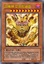 | 召唤神 艾克佐迪亚 | [怪兽|效果] 魔法师/暗 [★10] ?/0 这张卡不能通常召唤。把自己场上1只「被封印」怪兽解放的场合才能特殊召唤。 ①：这张卡的攻击力上升自己墓地的「被封印」怪兽数量×1000。 ②：这张卡不受其他卡的效果影响。 ③：自己结束阶段发动。从自己墓地选1只「被封印」怪兽加入手卡。 ④：这张卡被战斗破坏送去墓地时才能发动。手卡的「被封印」怪兽任意数量给对方观看，自己从卡组抽出给人观看的数量。 |
 | 古生物 奇虾 | [怪兽|效果|超量] 水/水 [☆2] 2400/0 2星怪兽×3只以上 ①：这张卡不受其他怪兽的效果影响。 ②：1回合1次，自己的魔法与陷阱区域的陷阱卡被送去墓地的场合才能发动。自己卡组最上面的卡翻开，那是陷阱卡的场合，加入手卡。不是的场合，送去墓地。 ③：这张卡有陷阱卡在作为超量素材的场合，1回合1次，把这张卡1个超量素材取除，以场上1张卡为对象才能发动。那张卡破坏。这个效果在对方回合也能发动。 |
 | 古生物 怪诞虫 | [陷阱] ①：以场上1只表侧表示怪兽为对象才能发动。那只怪兽的攻击力·守备力直到回合结束时变成一半。 ②：场上的陷阱卡发动时，连锁那个发动这个效果才能从墓地发动。这张卡变成通常怪兽（水族·水·2星·攻1200/守0）在怪兽区域特殊召唤（不当作陷阱卡使用）。这个效果特殊召唤的这张卡不受怪兽的效果影响，从场上离开的场合除外。 |
| 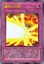 | 魔神火炎炮 | [陷阱|永续] 「魔神火炎炮」的①②的效果1回合只能有1次使用其中任意1个。 ①：以场上1只怪兽为对象才能把这个效果发动。从手卡·卡组把1只「被封印」怪兽或者1张「艾克佐迪亚」卡送去墓地，作为对象的卡回到持有者手卡。 ②：这张卡从魔法与陷阱区域送去墓地的场合，以自己墓地1只「被封印」怪兽或者1张「艾克佐迪亚」卡为对象才能发动。那张卡加入手卡。 |
 | 古生物 马尔三叶形虫 | [陷阱] ①：从卡组把1张陷阱卡送去墓地。 ②：场上的陷阱卡发动时，连锁那个发动这个效果才能从墓地发动。这张卡变成通常怪兽（水族·水·2星·攻1200/守0）在怪兽区域特殊召唤（不当作陷阱卡使用）。这个效果特殊召唤的这张卡不受怪兽的效果影响，从场上离开的场合除外。 |
| 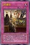 | DD重组 | [陷阱|永续] ①：只要这张卡在魔法与陷阱区域存在，自己场上的「契约书」卡不会被对方的效果破坏。 ②：把墓地的这张卡除外，以这张卡以外的除外的最多3张自己的「DD」卡为对象才能发动。那些卡回到卡组。 |
| 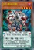 | DD 俄耳托斯 | [怪兽|效果|调整|灵摆] 恶魔/暗 [★4] 600/1800 3/3 ←3 【灵摆】 3→ ①：1回合1次，以场上1张魔法·陷阱卡和这张卡以外的自己场上1张「DD」卡或者「契约书」卡为对象才能发动。那些卡破坏。 【怪兽效果】 ①：自己因战斗·效果受到伤害时才能发动。这张卡从手卡特殊召唤。 ②：这张卡特殊召唤成功的回合，自己不是恶魔族怪兽不能特殊召唤。 |
 | DDD 极智王 混沌默示神 | [怪兽|效果|灵摆] 恶魔/暗 [★7] 2700/2000 4/4 ←4 【灵摆】 4→ ①：把自己墓地2只「DD」怪兽除外才能发动。灵摆区域的这张卡特殊召唤。 【怪兽效果】 「DDD 极智王 混沌默示神」的怪兽效果1回合只能使用1次，对方回合才能发动。 ①：这张卡在手卡·墓地存在的场合，以自己场上2张表侧表示的魔法·陷阱卡为对象才能发动。那些卡破坏，这张卡特殊召唤。这个效果的发动后，直到回合结束时自己不是恶魔族怪兽不能特殊召唤。 |
 | 古生物 加拿大虫 | [陷阱] ①：以对方场上1只表侧表示怪兽为对象才能发动。那只怪兽变成里侧守备表示。 ②：场上的陷阱卡发动时，连锁那个发动这个效果才能从墓地发动。这张卡变成通常怪兽（水族·水·2星·攻1200/守0）在怪兽区域特殊召唤（不当作陷阱卡使用）。这个效果特殊召唤的这张卡不受怪兽的效果影响，从场上离开的场合除外。 |